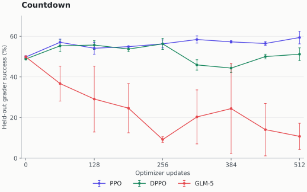
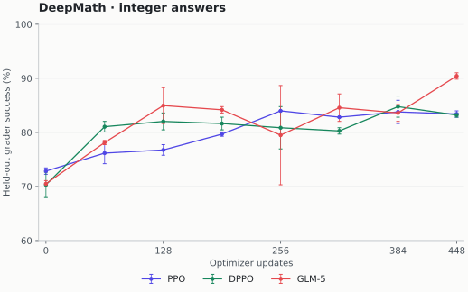

The shared gradient
Reinforcement learning increases the probability of rewarded responses. The advantage says how much better a response was than its baseline; the surrogate turns that signal into a differentiable training objective.
One prompt · Four responses
[1, 0, 1, 0][+1, −1, +1, −1]Subtract the mean reward, 0.5, then divide by the population standard deviation, 0.5.
Group Relative Policy Optimization (GRPO) uses responses to the same prompt as the baseline, avoiding a learned value model. It can be paired with any of the token surrogates below.
Now fix one sampled token and its preceding context:
- \(q\)
- Saved rollout probability
- \(p\)
- Current trainer probability
- \(r=p/q\)
- Importance ratio
- \(A\)
- Fixed response advantage
For model parameters \(\theta\), the basic ascent objective \(j=rA\) gives:
We compare the coefficient \(c\). Positive means reinforce the sampled token; negative means discourage it. Training minimizes \(-j\). Hold \(q\) and \(A\) fixed when differentiating.
A zero coefficient removes this token’s local contribution. Other tokens and optimizer momentum can still move its probability.
GRPO normalization and the ratio anchor
For response reward \(R_i\), group mean \(\bar R\), and a small stabilizer \(\epsilon\):
Identical group rewards give zero relative signal. Recipes differ in standard-deviation conventions and further normalization; our experiment uses the sample standard deviation.
The denominator must be explicit. Here \(q\) is the recorded rollout probability. Some recipes instead use a trainer snapshot and add a separate correction for inference mismatch. A token ratio alone does not fully correct the distribution of earlier prefixes.
The 2026 landscape
These are prominent publicly documented methods. Model reports establish specific uses, not an industry-wide ranking.
| Method | What changes | Public source |
|---|---|---|
| PPO / GRPO | Directional ratio clipping | DeepSeekMath |
| DAPO | More room for positive updates | DAPO |
| CISPO | Cap the gradient’s weight | MiniMax-M1 |
| GLM-5 async | Reject extreme token ratios | GLM-5 §4.1.2 |
| DPPO | Gate by distribution divergence | DPPO paper |
| SAPO | Attenuate smoothly | Qwen3-VL / SAPO |
| GSPO | Clip a whole-response ratio | Qwen3 / GSPO |
Framework support: verl, SkyRL, and Miles
Source snapshots checked September 15, 2026. Support does not establish relative throughput.
| Framework | Implemented paths | Default reduction |
|---|---|---|
| verl | PPO, DPPO, GSPO, SAPO, CISPO | Token mean |
| SkyRL | PPO, DPPO, GSPO, SAPO, CISPO, rollout IS | Token mean |
| Miles | PPO, GSPO; custom-loss hook | Sequence mean |
Our Miles experiment uses the custom hook. Check the reduction separately: Miles calls its default “sample mean”; verl and SkyRL also expose alternative reductions.
Clip, cap, or reject
PPO: stop pushing farther
Proximal Policy Optimization (PPO) stops an update that has moved far enough in the advantage’s preferred direction. It keeps updates that would correct a move in the wrong direction.
Same token · Opposite advantages
Rollout probability 0.20 → current probability 0.30. The ratio is 1.5; PPO’s bounds are 0.8–1.2.
With lower bound \(l\) and upper bound \(u\), the objective is:
The min makes clipping directional. Away from the boundaries:
DAPO: widen the positive side
DAPO’s clip-higher component uses the same formula with a larger upper bound. This gives low-probability tokens more room to grow before clipping.
At \(r=1.25,\ A=+1\): PPO’s upper bound 1.2 gives \(c=0\); DAPO’s 1.28 gives \(c=1.25\).
Full DAPO also changes sampling, token aggregation, and overlong-response handling. Changing only the upper bound tests one component.
Dual-clip PPO: another hard boundary
Implemented in verl and SkyRL, dual-clip limits unusually large negative-advantage terms. For a constant \(\kappa>1\):
At \(r=4,\ A=-1,\ \kappa=3\), ordinary PPO keeps \(c=-4\). Dual-clip selects the constant objective \(-3\), so \(c=0\). Our runs use ordinary PPO.
CISPO and GLM-5: cap versus reject
Both multiply log probability by a weight \(w\). Stop-gradient, written \(\operatorname{sg}\), freezes that weight during differentiation:
- CISPO caps \(w\). MiniMax-M1 keeps useful token gradients beyond the clipping boundary.
- GLM-5 rejects extreme ratios. Its asynchronous agent surrogate distrusts tokens far from their recorded rollout probabilities, regardless of advantage sign.
Same bounds · Different operation
With bounds 0.5–5 and \(A=+1\), compare the coefficient:
| Ratio | CISPO | GLM-5 async |
|---|---|---|
| 0.2 | 0.5 · floor | 0 · reject |
| 1.5 | 1.5 · retain | 1.5 · retain |
| 10 | 5 · cap | 0 · reject |
Writing \(\mathbf1[\cdot]\) for a condition that is either one or zero:
Using \(w=r\) gives the same gradient as \(rA\), despite different loss values. Omitting stop-gradient would add an unwanted derivative through the weight.
Here “GLM-5” always means its async token-rejection surrogate. A loss mask removes gradient contributions; it does not terminate rollouts or usually save token computation.
Beyond ratio clipping
DPPO: measure probability mass
Divergence Proximal Policy Optimization (DPPO) questions whether a large ratio means a large change. A rare token can grow tenfold while moving little probability mass.
Two rewarded tokens · \(A=+1\)
| Probability change | Ratio | Mass moved |
|---|---|---|
| 0.001 → 0.01 | 10 | 0.009 |
| 0.50 → 0.70 | 1.4 | 0.20 |
GLM’s 0.5–5 interval rejects the rare token and keeps the common one. DPPO with a probability-mass threshold of 0.15 does the reverse.
Binary total variation (TV) groups the vocabulary into “sampled token” and “everything else.” The distance between \([q,1-q]\) and \([p,1-p]\) is simply \(|p-q|\).
DPPO applies a directional gate \(m\), with thresholds \(\delta_+\) and \(\delta_-\):
Divergence changes the gate, not the retained weight. The rare token still gets \(c=10\). Binary TV cannot detect mass rearranged among the other vocabulary entries.
A negative advantage, and implementation variants
Take \(A=-1,\ q=0.90,\ p=0.74\). PPO keeps \(c\approx-0.822\), inside its 0.8–1.2 bounds. DPPO rejects it: the decrease of 0.16 exceeds 0.15. Mass-based gating can be stricter for common tokens.
The paper also studies binary Kullback–Leibler divergence and top-\(K\) approximations. Here DPPO means the binary-TV variant of Divergence PPO.
The pinned verl path additionally caps a detached importance weight: \(c=A\min(r,C)m\), for cap \(C\). The pinned SkyRL path and our experiment use the uncapped coefficient above, subject to the numerical guard documented with our results.
SAPO: soften the boundary
Soft Adaptive Policy Optimization (SAPO) reduces influence smoothly as a ratio drifts. It uses the sigmoid \(\sigma(z)=1/(1+e^{-z})\), a smooth function between zero and one.
At \(r=1.5,\ A=+1\), PPO clips to zero. With temperature \(\tau=1\), SAPO’s attenuation is about 0.94, giving \(c\approx1.5\times0.94=1.41\).
Define \(h=\sigma(\tau(r-1))\). Then:
At \(r=1\), attenuation is one. Larger \(\tau\) makes it decay faster; positive and negative advantages can use different temperatures. The attenuation is bounded, not the complete coefficient \(c\).
GSPO: decide for the whole response
Group Sequence Policy Optimization (GSPO) replaces noisy token-level decisions with one length-normalized sequence ratio.
Two token ratios are 0.5 and 2.0, with \(A=+1\). Their geometric mean is \(\sqrt{0.5\times2}=1\), so GSPO keeps the response.
GSPO gives token coefficients [0.5, 0.5]. PPO with bounds 0.8–1.2 retains the first token and clips the second. Averaging over the two tokens gives [0.25, 0].
For \(L\) scored tokens with ratios \(r_t\), define the sequence ratio \(s\):
Every retained token gets \(c_t=As/L\); a clipped response loses all these local contributions. GSPO uses much tighter bounds than typical token clipping. Copying token thresholds would change the strength of the constraint.
Try the gradients
Compare one token across six rules. Positive \(c\) reinforces the token; negative \(c\) discourages it. GSPO needs a whole response and is omitted here.
Policy-gradient coefficient
Choose an example, then adjust the token probabilities.
Example thresholds
PPO: 0.8–1.2. DAPO: 0.8–1.28. CISPO cap and GLM rejection: 0.5–5. Binary-TV DPPO: δ = 0.15. SAPO: τ = 1 for positive and 1.05 for negative advantages. These are illustrative settings, not constraints matched in strength.
At \(p=q\), all six rules give \(c=A\). Small updates on fresh batches may barely activate the gates. Measure their activation before attributing a result to an algorithm name.
Weighting long responses
More tokens means more loss terms, not more optimizer steps. The reduction decides their relative weight.
One prompt · Responses of 10 and 90 tokens
- Sequence mean: average tokens within each response, then average responses.
- Prompt mean: pool tokens within each prompt group, then average prompts.
- Token mean: pool the whole batch. Prompts producing more tokens get more weight too.
Fixed group sizes do not make these equivalent. Our experiment uses sequence mean throughout.
The exact denominators
Let \(j_{igt}\) be token \(t\)’s objective in response \(g\) to prompt \(i\). There are \(B\) prompts, \(G\) responses per prompt, and \(L_{ig}\) valid tokens per response.
A trajectory gradient naturally sums token terms. Dividing by length deliberately reweights it; equal reduction weights do not guarantee equal gradient norms. Check the denominator and distributed normalization, because library names vary.
Other methods change different layers: RLOO changes the reward baseline; REINFORCE++ changes baseline and normalization choices; Dr. GRPO removes particular normalization biases.
Twelve full-parameter training runs
We trained Qwen3.5-9B in Miles on two B200s. Three surrogates × two datasets × two seeds. Only the surrogate and its declared thresholds change within each dataset/seed.
| Compared | PPO: 0.8–1.2 · DPPO: 0.15/0.15 · GLM-5: 0.5–5 |
|---|---|
| Held fixed | Starting checkpoint, GRPO advantages, sequence mean, prompt order, sampling, optimizer, and update budget |
| Scale | All 8.95B language-policy parameters; no adapters. 512 training tasks and 256 test tasks per dataset. |
| Runtime | 6.91 hours total · 32.4–35.5 minutes per run · 153.4 GiB maximum memory observed on one GPU |
Thresholds are fixed choices, not equally strong or separately tuned constraints. This tests three surrogates in one synchronous recipe, not complete lab training systems.
Countdown: PPO led; GLM-5 deteriorated
Construct an exact arithmetic expression from four supplied numbers. Each run gets 512 updates and a 1,024-token response cap.

- PPO had the highest final mean: 59.38%, versus DPPO’s 51.17% and GLM-5’s 10.74%.
- GLM-5 often ran out of room: 90.23% of final responses hit the cap, versus PPO’s 40.43% and DPPO’s 44.34%.
DeepMath: GLM-5 led on the integer grader
Solve math problems with integer final answers. Each run gets 448 updates and a 2,048-token response cap. This is a custom subset, not the official benchmark.

- GLM-5 had the highest final mean: 90.43%, versus PPO’s 83.40% and DPPO’s 83.20%.
- GLM-5 hit the cap less often: 4.49%, versus PPO’s 11.52% and DPPO’s 9.38%. Intermediate scores still fluctuated.
All twelve endpoints and evaluation variability
Countdown
| Surrogate | Seed 42 | Seed 43 | Mean |
|---|---|---|---|
| PPO | 56.25% | 62.50% | 59.38% |
| DPPO | 54.30% | 48.05% | 51.17% |
| GLM-5 | 17.19% | 4.30% | 10.74% |
DeepMath
| Surrogate | Seed 42 | Seed 43 | Mean |
|---|---|---|---|
| PPO | 82.81% | 83.98% | 83.40% |
| DPPO | 83.59% | 82.81% | 83.20% |
| GLM-5 | 91.02% | 89.84% | 90.43% |
Six baseline evaluations per dataset used the same starting checkpoint. Countdown ranged from 48.44% to 50.39%; DeepMath from 67.97% to 73.44%. Average pairwise task-reward disagreement was 15.94% and 11.93%, respectively. Greedy inference was not bitwise repeatable.
The same 256 test tasks are reused across seeds. The paired task-bootstrap intervals condition on the realized models and outputs; they exclude training-seed and inference-runtime uncertainty. Disjoint study splits do not rule out base-model pretraining exposure.
What changed inside the updates?
Apply all three gates to the same PPO-run token probabilities. The share of nonzero-advantage, sequence-normalized token weight gated off was:
| PPO-run inputs | PPO | DPPO | GLM-5 |
|---|---|---|---|
| Countdown | 1.51% | 0.38% | 0.24% |
| DeepMath | 0.43% | 0.04% | 0.02% |
These are counting weights, not fractions of gradient norm. A rare token with a large ratio can matter disproportionately. Different updates then change future responses and rewards.
- Zero-advantage groups were common: 27.34%–62.89% of minibatch steps had zero fresh gradient. Adam momentum can still move weights.
- The full audit includes six rules. DAPO, CISPO, and SAPO columns are diagnostics, not trained arms.
- Guarded extremes need care: counterfactual weight columns omit log-ratio-clamp derivative saturation. The PPO traces above never activated that guard.
Response examples behind the scores
Countdown repetition. At 256 updates, GLM-5 seed 42 scored 10.55%; 89.06% of outputs hit the cap. Its first failed evaluation response repeated 145/ ? = ? until truncation.
All three methods failed that selected task. The excerpt illustrates the behavior; the curves measure its broader impact. Both GLM runs continued to their scheduled endpoints.
DeepMath grader limits. We inspected the first three zero-to-one reward transitions in evaluation order for GLM-5 seed 42. The recorded cases show:
- An oscillating limit labeled 1 by the dataset; the rewarded response also boxed 1.
- A response using Taylor expansions despite instructions forbidding them.
- A baseline that derived 44 but truncated before boxing it; the trained response finished.
No labels changed after inspection. These three cases cannot estimate the prevalence of grader errors.
Training recipe and correctness checks
| Engine | Miles + Fully Sharded Data Parallel (FSDP2); SGLang rollouts on the same two GPUs |
|---|---|
| Precision | Bfloat16 computation; 32-bit master weights, gradient reduction, and Adam states |
| Optimizer | AdamW, learning rate 10−6, zero weight decay, gradient-norm limit 1 |
| Objective | GRPO sample-standard-deviation normalization; sequence mean; no reference-policy or entropy penalty |
| Collection | 32 prompts × 4 responses; 16 minibatches of 8 responses, each consumed once |
| Budget | Countdown: 32 collections / 4,096 responses. DeepMath: 28 / 3,584. |
| Decoding | Training temperature 1, top-p 1; greedy evaluation every 64 updates; thinking template disabled |
| Seeds | 42 and 43; reset model and optimizer before every arm |
The rollout anchor stays fixed for all 16 minibatch updates. Then weights synchronize and generation resumes. Later minibatches therefore see a changed trainer even though collection is synchronous.
Data and rewards
- Countdown: four-number puzzles, checked with a restricted parser and exact rational arithmetic.
- DeepMath: integer-answer problems from the first shard, checked against the final boxed integer.
- Deduplicated, disjoint pilot/training/test splits. Binary rewards; no solution traces, partial credit, or special truncation penalty.
Validation and protocol changes
- Full-parameter audit: Adam state covers 8,953,803,264 language-policy parameters; weights changed in all 32 decoder layers. Unused vision and multi-token-prediction components are outside these text tasks.
- Gradient checks: analytic derivatives for six token surrogates; custom PPO matches native Miles loss and gradients on 1,000 randomized cases.
- Numerical guard: log ratios clamp to [−20,20]. It activated only in GLM runs, where those tokens were already rejected.
- Grader correction: a pilot exposed valid LaTeX arithmetic rejected by the parser. We fixed it, restarted from the starting checkpoint, and froze training code before the comparison.
- Runtime adjustment: DeepMath’s timing probe led to 28 collections for every arm. Its interrupted probe is excluded; the revised schedule used runtime, not algorithm scores.
Trainer/inference agreement
Before minibatch updates, run-mean absolute log-probability differences averaged 0.0047–0.0124 natural-log units per response. Token-level 99.9th percentiles were 0.155–0.250. Small averages did not eliminate outliers.
Countdown GLM-5 seed 43 had six differences above 5 among 4,039,764 positions, maximum 14.491. They appeared after 320 updates, after scores had fallen. Their cause remains unresolved.
Runtime includes initialization, compilation, generation, evaluation, and checkpointing. Shared caches and six-rule diagnostics prevent treating these timings as a loss-kernel speed comparison.
Choose the coefficient, then test the recipe. PPO, DPPO, and GLM-5 can retain the same \(Ar\) gradient yet produce very different learning curves. The gate, response budget, and grader all matter.
Sources & code
Primary papers and pinned implementations
- Schulman et al., Proximal Policy Optimization Algorithms (2017). Clipped surrogate.
- DeepSeekMath: Pushing the Limits of Mathematical Reasoning in Open Language Models (2024). GRPO and its original sequence-mean objective.
- DAPO: An Open-Source LLM Reinforcement Learning System at Scale (2025). Clip-higher and the broader training recipe.
- MiniMax-M1: Scaling Test-Time Compute Efficiently with Lightning Attention (2025), §3. CISPO.
- Group Sequence Policy Optimization (2025). Sequence ratios and clipping.
- Soft Adaptive Policy Optimization (2025). Smooth token gradients and Qwen3-VL practice.
- Rethinking the Trust Region in LLM Reinforcement Learning (2026). DPPO; Binary and top-K divergence gates.
- GLM-5: from Vibe Coding to Agentic Engineering (2026), §4.1.2. Direct rollout importance ratios and token rejection.
- The Art of Scaling Reinforcement Learning Compute for LLMs (2025). ScaleRL; Controlled study including prompt, sequence, and token aggregation.
- verl policy losses and actor defaults, pinned September 15, 2026.
- SkyRL policy losses, pinned September 15, 2026. Executable operations, rather than comments alone, determine the gradients.
- Miles source used for training.
- Qwen3.5-9B checkpoint; Countdown-Tasks-3to4; DeepMath-103K. Exact data revisions and split hashes accompany the experiment.
How to cite this post
@article{dong2026rlsurrogates,
title = {RL Surrogate Losses in 2026},
author = {Dong, Simon},
year = {2026},
url = {https://simondong1.github.io/rl-surrogates-2026.html}
}